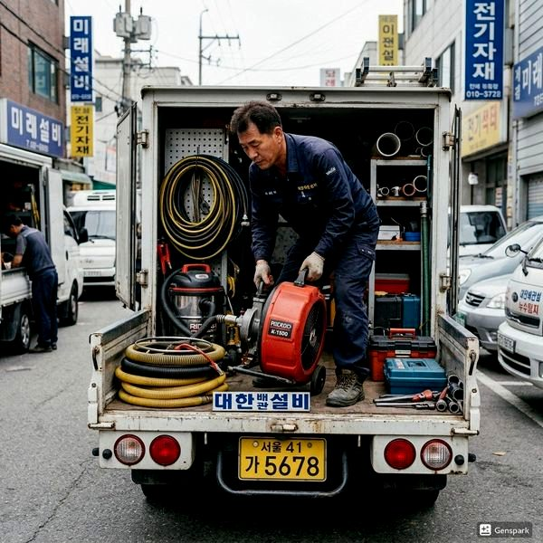
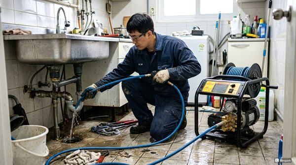
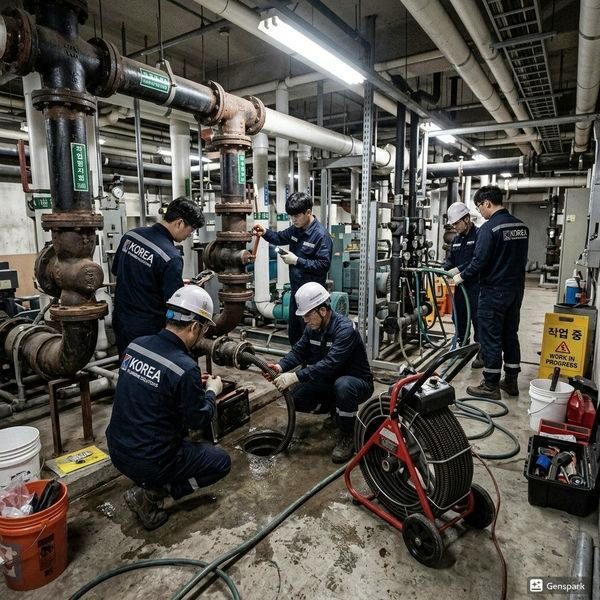

친환경 배관 관리 - 화학약품 없이 배관 깨끗하게
2026년 4월 12일 | 제우스시설관리
화학 세정제에 의존하는 배관 관리는 환경오염과 배관 부식이라는 두 가지 문제를 일으킵니다. 친환경적인 배관 관리는 화학약품 없이도 충분히 가능하며, 오히려 배관 수명을 연장하는 효과가 있습니다.

가정에서 실천할 수 있는 친환경 배관 관리법: ① 끓는 물: 주 1회 각 배수구에 2리터의 끓는 물을 부으면 기름때가 녹아내립니다. ② 베이킹소다 + 식초: 화학 반응이 온화하여 배관에 무해하면서 경미한 막힘을 해결합니다. ③ 소금 + 끓는 물: 굵은 소금 반 컵 후 끓는 물을 부으면 살균과 탈취 효과가 있습니다.
전문적인 친환경 세척의 핵심은 고압세척기입니다. 화학약품이 아닌 순수한 물의 압력(150bar 이상)으로 배관 내벽의 모든 오물을 물리적으로 제거합니다. 화학물질이 전혀 사용되지 않으므로 환경에 무해하고, 배관에도 손상을 주지 않습니다.

제우스시설관리의 드레인 기계도 순수한 물리적 방법입니다. 스프링 와이어가 막힌 덩어리를 직접 절삭하여 제거합니다. 두 장비 모두 화학약품 없이 배관을 완벽하게 정비하는 친환경 솔루션입니다.

환경과 건강을 생각하는 배관 관리, 제우스시설관리와 함께하세요. 화학약품 없이도 배관을 깨끗하고 오래 사용할 수 있습니다. 28분 내 출동, 전화: 010-4406-1788